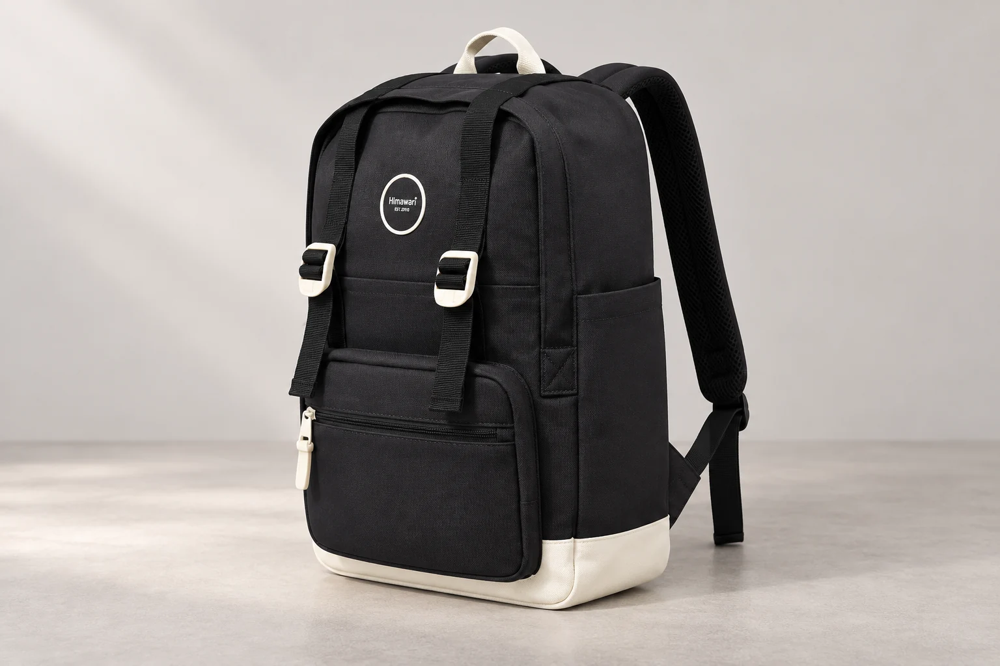

백팩 상세 사진, 정면 한 장 다음에 봐야 할 것들

마음에 드는 백팩을 찾으면 대표 사진부터 크게 보게 됩니다. 하지만 정면이 예쁜지 확인한 뒤 곧바로 주문하면 옆으로 나온 포켓이나 입구의 여는 방식을 놓칠 수 있습니다. 상세 사진은 같은 모습을 여러 번 보여주는 자료가 아니라 각기 다른 질문에 답하는 자료로 읽으면 유용합니다. 화면을 넘길 때마다 한 가지씩 확인해보세요.
정면에서는 무엇이 열리는 부분인지 찾습니다
앞면의 가로선이 모두 지퍼는 아닙니다. 봉제선, 덮개 가장자리, 장식 끈이 비슷하게 보일 수 있으므로 손잡이나 여밈 부품이 이어지는 위치를 함께 봅니다. 포켓이 겹쳐 있다면 위쪽 입구가 어디인지, 덮개를 열려면 어떤 부품을 풀어야 하는지 상세 사진과 설명에서 확인하세요. 검정 원단처럼 선이 잘 안 보이는 경우에는 밝은 옵션의 같은 모델 사진이 구조를 이해하는 데 도움이 될 수 있지만, 색상에 따라 사양이 같은지도 별도로 확인해야 합니다.
옆면에서는 두께와 입구의 관계를 봅니다
정면 사진만으로는 앞 포켓이 얼마나 앞으로 나오거나 옆주머니가 어느 위치까지 올라오는지 알아보기 어렵습니다. 옆면이나 사선 사진으로 본체와 포켓의 경계를 찾아보세요. 사진 속 가방이 빈 상태인지, 형태를 잡기 위한 충전물이 들어 있는지도 외형에 영향을 줍니다. 넓어 보이는 옆주머니라도 늘어나는 소재나 특정 물병 수납이 안내되지 않았다면 추정하지 않습니다. 실제로 넣을 물건의 치수와 주머니 정보를 따로 비교하는 단계가 필요합니다.
내부 사진은 주머니 개수보다 여는 방향부터
내부 사진이 있으면 입구가 얼마나 펼쳐져 있는지, 안쪽 주머니가 어느 벽면에 붙어 있는지 먼저 봅니다. 내가 자주 꺼낼 물건을 찾으려면 다른 짐을 먼저 빼야 할지 상상해보세요. 어두운 부분에 주머니가 보이지 않는다고 없다고 단정하거나, 넓게 펼친 사진만으로 실제 사용할 수납 부피를 계산하지 않습니다. 필요한 칸의 사진이 빠져 있다면 막연히 내부가 넓은지 묻기보다, 원하는 수납 위치의 사진이나 치수 확인을 요청하면 좋습니다.
착용 사진은 비율을 보는 참고 자료입니다
카메라가 가까이 있거나 아래에서 찍으면 가방의 특정 부분이 더 커 보일 수 있습니다. 착용자의 키, 체형, 어깨끈 길이와 자세에 따라서도 등에서 차지하는 비율이 달라집니다. 따라서 내 등에 같은 높이로 놓일 것이라고 단정하지 말고, 정면과 옆면의 착용 모습을 함께 보세요. 크기는 실제 치수로 확인하고 사진은 어깨끈이 어디로 이어지는지, 손잡이와 몸체가 옷과 어떤 인상을 만드는지 이해하는 자료로 활용합니다.
주문 직전에는 사진의 모델과 선택 옵션을 맞춥니다
같은 페이지 안에 여러 크기나 세트가 섞여 있다면 사진에 등장한 액세서리가 모두 포함되는지 확인해야 합니다. 모델 번호의 M·L 같은 끝부분과 옵션명을 함께 대조하세요. 이 글의 대표 사진은 Himawari No.1088M의 형태를 살펴보기 위한 AI 연출 사진으로, 체스트벨트 등 구성품 전체를 펼친 사진은 아닙니다. 최종 구성과 색상은 실제 옵션 안내를 기준으로 확인해주세요. 필요한 사진이 없을 때는 모델명, 선택 옵션, 궁금한 부위를 적어 문의하면 서로 다른 제품을 놓고 이야기하는 일을 줄일 수 있습니다.
참고·안내
- Himawari No.1088M 제품 정보
- 실제 Himawari No.1088M 제품 사진을 참조해 만든 AI 연출 이미지입니다. 구매 시에는 해당 옵션의 실제 상품 사진과 구성 안내를 함께 확인하세요.
자주 묻는 질문
사진에 자를 대고 가방 크기를 계산해도 되나요?
화면 확대 비율과 촬영 각도에 따라 크기가 달라 보입니다. 사진 속 길이를 실측값으로 환산하지 말고 제품의 치수 안내를 확인하세요.
연출 사진에 함께 나온 소품도 구성품인가요?
소품이 함께 보인다는 이유만으로 포함된다고 볼 수 없습니다. 선택한 옵션의 구성품 안내를 확인하고, 불명확하면 주문 전에 문의하세요.